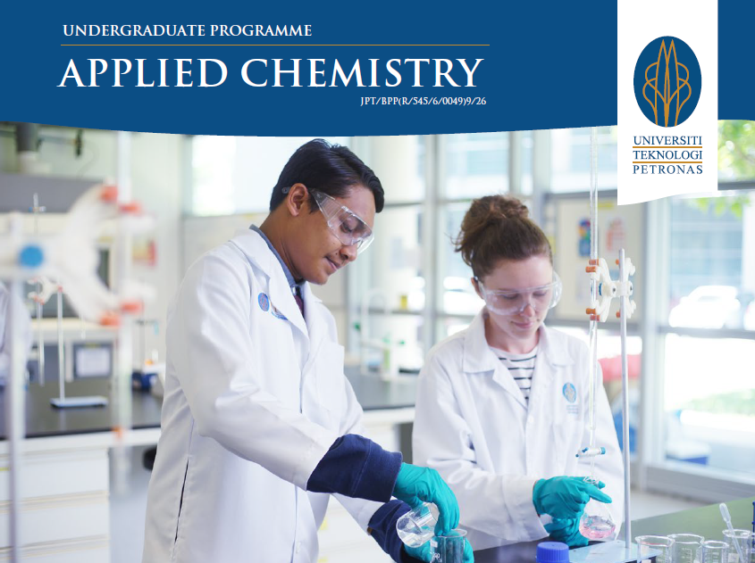
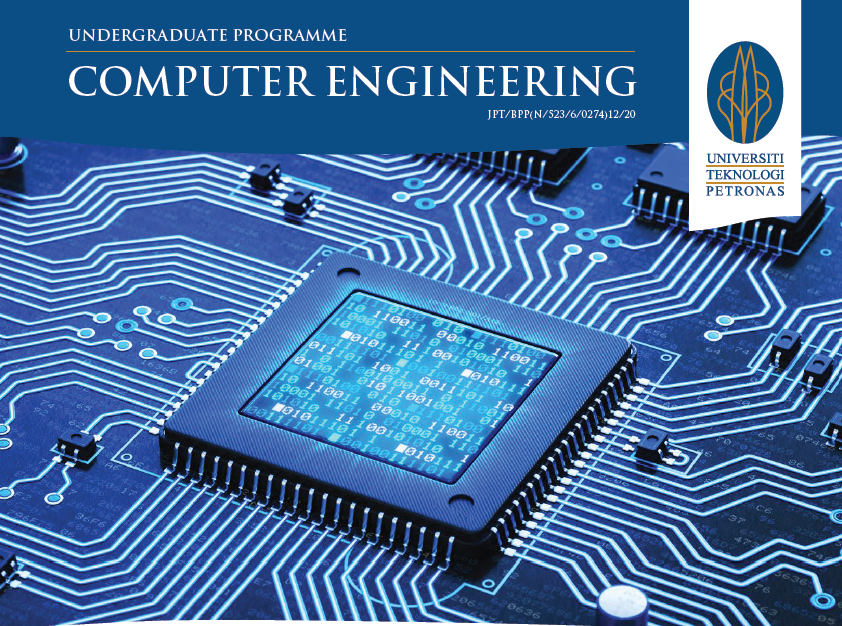
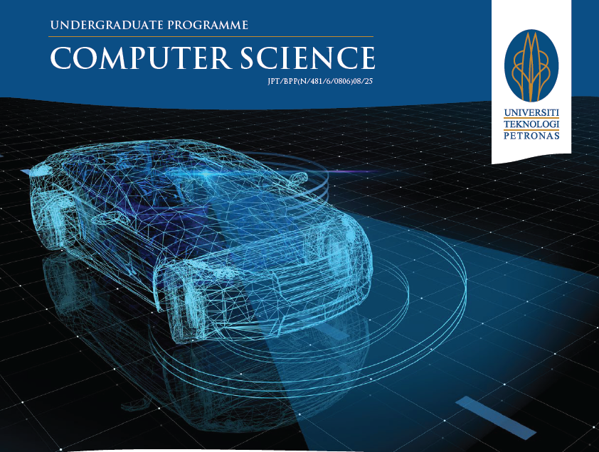
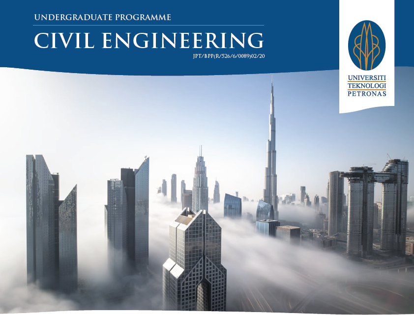
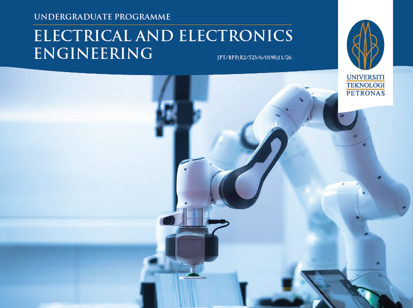
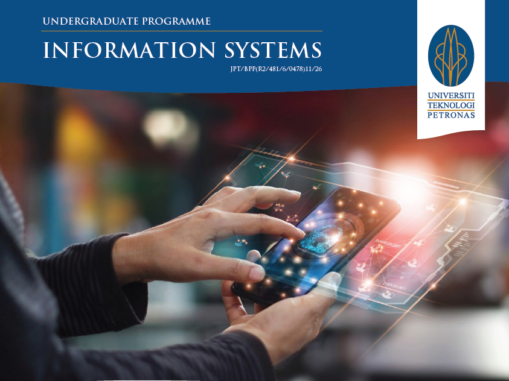
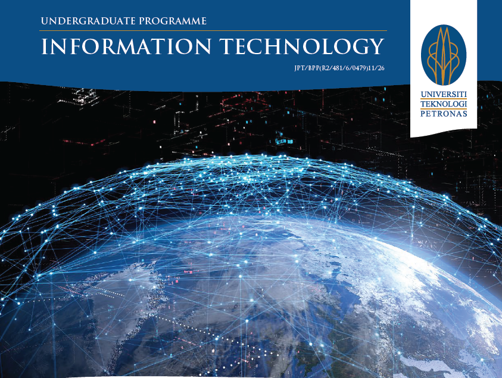
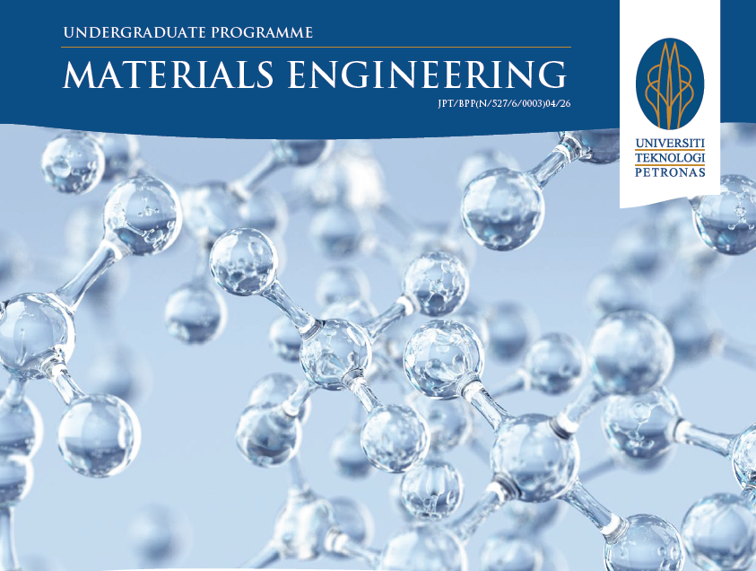
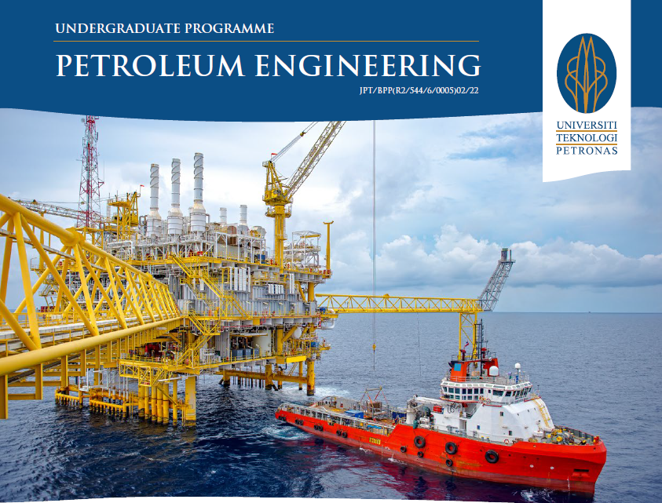
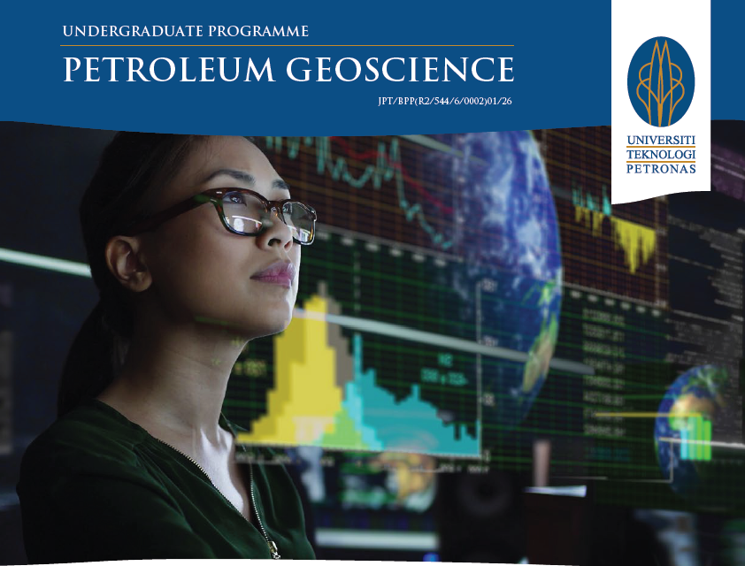

Universiti Teknologi PETRONAS (UTP) was established on 10 January 1997 and is the best private university in Malaysia.
UTP offers a wide range of industry-relevant engineering, science and technology programmes at undergraduate and postgraduate levels. It aims to produce well-rounded graduates with excellent leadership qualities and communication abilities.
The university conducts extensive research activities in collaboration with PETRONAS and other institutions and industries, locally and abroad, on six research focus and niche areas. They are self-sustainable building, transport infrastructure, health analytics, hydrocarbon recovery, contaminant management and autonomous system.
UTP has produced more than 24,000 graduates. It currently has an enrolment of above 1000 foundation students, more than 4,000 undergraduates and over 1,000 postgraduates from more than 50 countries around the world.
All Faculty in Universiti Teknologi Petronas
"Ungraduate Programme"
Applied Chemistry

Applied chemistry focuses on applying chemical principles to solve industrial problems while ensuring sustainable development. This includes creating biodegradable plastics, treating toxic waste, and promoting green industrial processes.
Bussiness Management
Business management involves planning, leading, organizing, and controlling resources to enhance business efficiency, sustainability, and adaptability. It plays a vital role in driving innovation and ensuring business success.
Computer Engineering

Computer engineering focuses on designing, building, and programming computer-based systems, from mobile devices to high-end computers. It combines expertise in electronics engineering and computer science, enabling seamless hardware and software integration.
Chemical Engineering
Chemical engineering focuses on transforming raw materials into useful products like fuel, plastics, and fertilizers while improving industrial processes. It addresses industry challenges through resource assessment, cost analysis, and sustainability, preparing engineers with essential skills for the future.
Computer Science

Computer science spans computing theory and practice. The practical side is about designing and building software and developing effective ways to solve computing problems, while the theoretical side is about devising new and better ways of using computers and addressing computing challenges.
Civil Engineering

Civil engineering focuses on the design, construction, and maintenance of buildings and infrastructure in the built environment. It encompasses roads, bridges, dams, and urban developments, while prioritizing sustainability and improving quality of life.
Electrical Engineering

Electrical and electronics engineering covers power generation, distribution, and the use of electronic systems for communication and control. It spans large-scale facilities like power stations to microelectronic devices like sensors and microcontrollers, playing a vital role across industries such as manufacturing, IT, and transportation.
Information System

Information systems is all about effectively managing the appropriate software to support an organisation’s decision making and communications. This is achieved by the use of relevant information systems concepts and tools. It is vital in a business environment, providing solutions and services to various industries while solving many business challenges globally.
Information Technology

Information technology is all about selecting, developing, applying, integrating, and administering secure computing technologies to enable users to accomplish their personal, organisational and societal goals.
Materials Engineering

Materials engineering explores material behavior to enhance performance, driving innovation and new inventions. Materials engineers impact various aspects of life, such as designing lightweight, strong materials for high-performance Formula 1 cars.
Mechanical Engineering
Mechanical engineering is a versatile discipline focused on the study and design of moving systems, including complex systems like the human body. Anything with moving parts or requiring manufacturing falls within the expertise of a mechanical engineer.
Petroleum Engineering

Petroleum engineering focuses on developing reservoirs and producing hydrocarbons, including crude oil, natural gas, and unconventional resources. It covers areas like formation evaluation, reservoir management, drilling, and production engineering.
Petroleum Geoscience

Petroleum geoscience, also called "petroleum detective," specializes in studying the petroleum system, from its origin and migration to exploration and exploitation of oil and gas.